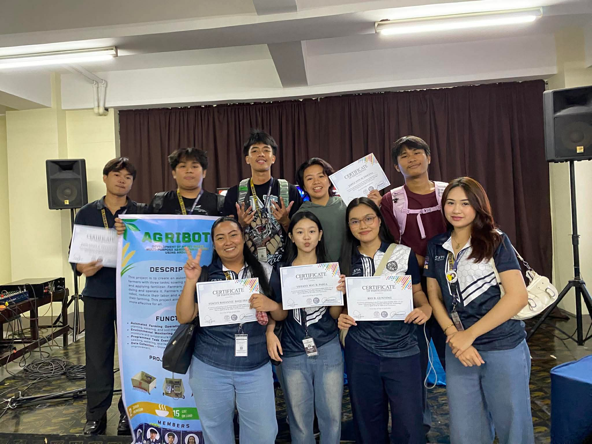
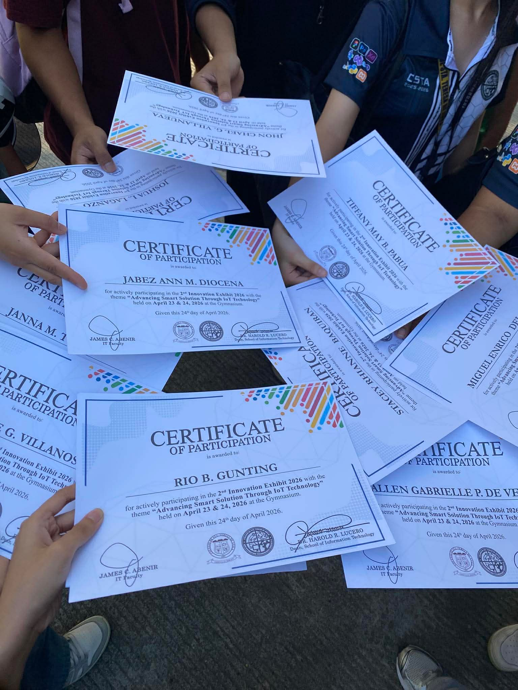
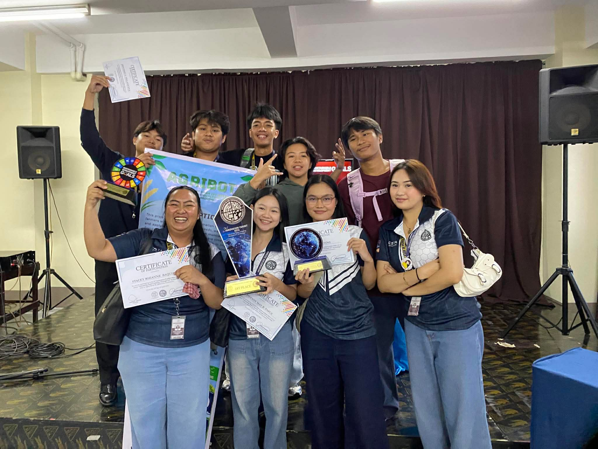
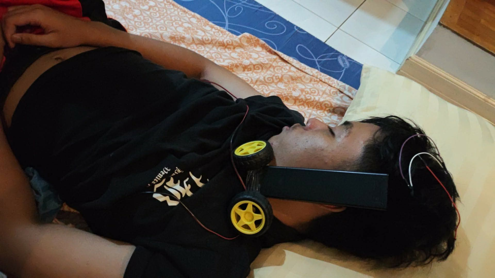

I am Miguel Enrico, a college student at Colegio de Sta. Teresa de Avila. I am currently pursuing my academic journey with a strong interest in continuous learning, personal development, and skill enhancement. As a student, I strive to build a solid foundation of knowledge while also developing discipline, responsibility, and critical thinking skills that are essential in both academic and real-world settings. I am passionate about learning and always eager to improve myself in different areas, especially in design, creativity, and problem-solving. I enjoy exploring new ideas and approaches that allow me to express myself while also expanding my understanding of various subjects. Through my studies and experiences, I aim to grow not only intellectually but also personally, becoming more adaptable, confident, and prepared for future challenges. As I continue my college journey, I am committed to doing my best in every opportunity given to me, with the goal of shaping a meaningful and successful future.




Adjustment to college life, new environment, and academic pressure.
Learning time management and building basic study habits.
First experience of independence and responsibility.
More confidence in handling school requirements.
Improved study routine and better organization of tasks.
Started developing personal discipline.
More difficult subjects and higher expectations.
Stronger focus on academics and creative output.
Improved problem-solving and critical thinking skills.
Real growth in maturity and responsibility.
Better balance between schoolwork and personal life.
More confident in completing tasks independently.
My journey in college has been full of challenges, growth, and learning. Every semester shaped me into a better version of myself. I am still improving and working toward my goals in life.
Email: delosreyesmiguelenrico@gmail.com
Phone: 09270722278